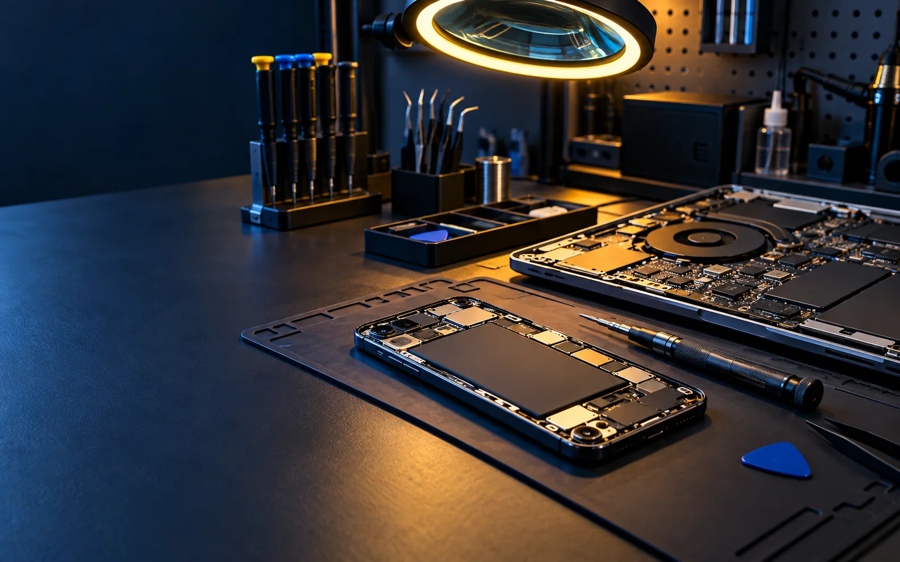

Telefonía móvil
Diagnóstico y reparación de problemas de hardware o software en teléfonos móviles.
Servicio técnico
Diagnóstico y reparación de dispositivos electrónicos en Ayamonte.
Área electrónica
Una caída, un fallo de carga o un problema de funcionamiento pueden tener causas distintas. Describe el síntoma y el equipo para recibir una orientación inicial.
Diagnóstico y reparación de problemas de hardware o software en teléfonos móviles.
Revisión de equipos informáticos y localización de fallos de funcionamiento.
Indica modelo, síntoma y antecedentes del fallo para preparar mejor la revisión.

Antes de venir
Trae el dispositivo, sus accesorios relacionados con el fallo y, si es posible, una descripción clara de cuándo empezó el problema.
No publicamos tarifas ni plazos cerrados: dependen de la valoración y del trabajo necesario.
Imagen representativa generada para esta web.